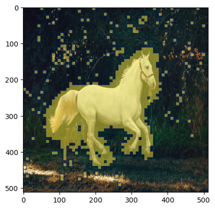

Originally, this was the blog post I wanted to write about, but realized there is no single place for understanding Stable diffusion with code. Which is the reason I ended up creating the four part series as reference or pre-read material to understand this paper.
1 What is DiffEdit?
In simple terms, you can think of DiffEdit approach as a more controlled version of Image to Image pipeline. DiffEdit takes three inputs- 1. An input image 2. Caption - Describing the input image 3. Target Query - Describing the new image you want to generate
and produces a modified version of the original image based on the query text. This process is particularly good if you want to make a slight tweak to the actual image without completely modifying it.
Fig. 1: Overview of Diff Edit.
As we can see from the image above only the fruits parts of the image was replaced with pears. Pretty amazing results!
The way authors explains they achieve it by introducing a mask generation module which determines which part of the image should be edited and then only perform text based diffusion conditioning on the masked part.
Fig. 2: From the paper DiffEdit[https://arxiv.org/pdf/2210.11427.pdf]. An approach to change an input image by providing caption text and new text.
As we can see from the image above taken from the paper, the authors create a mask from the input image which accurately determines the part of the image where fruits are present and generate a mask (shown in Orange) and then perform masked diffusion to replace fruits with pears. Reading further the authors provide a good visual representation of the whole DiffEdit process.
As I was reading this paper, it seems generating the masking is the most important step and rest is just textual conditioning using diffusion process. The conditioning of an image using mask is a similar idea implemented in Hugging face In-Paint Pipeline. As suggested by the authors, “there are three steps to DiffEdit process - Step 1: Add noise to the input image, and denoise it: once conditioned on the query text, and once conditioned on a reference text (or unconditionally). We derive a mask based on the difference in the denoising results. Step2: we encode the input image with DDIM, to estimate the latents corresponding to the input image Step3: we perform DDIM decoding conditioned on the text query, using the inferred mask to replace the background with pixel values coming from the encoding process at the corresponding timestep”1
In next sections we will start implementing these ideas into actual code.
Let’s start by importing the required libraries and helper functions. All of this was already used and explained in the previous part 2 and part 3 of the stable diffusion series.
Code
import torch, logging## disable warningslogging.disable(logging.WARNING) ## Imaging libraryfrom PIL import Imagefrom torchvision import transforms as tfms## Basic librariesfrom fastdownload import FastDownloadimport numpy as npfrom tqdm.auto import tqdmimport matplotlib.pyplot as plt%matplotlib inlinefrom IPython.display import displayimport shutilimport os## For video displayfrom IPython.display import HTMLfrom base64 import b64encode## Import the CLIP artifacts from transformers import CLIPTextModel, CLIPTokenizerfrom diffusers import AutoencoderKL, UNet2DConditionModel, DDIMScheduler## Helper functionsdef load_artifacts():''' A function to load all diffusion artifacts ''' vae = AutoencoderKL.from_pretrained("CompVis/stable-diffusion-v1-4", subfolder="vae", torch_dtype=torch.float16).to("cuda") unet = UNet2DConditionModel.from_pretrained("CompVis/stable-diffusion-v1-4", subfolder="unet", torch_dtype=torch.float16).to("cuda") tokenizer = CLIPTokenizer.from_pretrained("openai/clip-vit-large-patch14", torch_dtype=torch.float16) text_encoder = CLIPTextModel.from_pretrained("openai/clip-vit-large-patch14", torch_dtype=torch.float16).to("cuda") scheduler = DDIMScheduler(beta_start=0.00085, beta_end=0.012, beta_schedule="scaled_linear", clip_sample=False, set_alpha_to_one=False) return vae, unet, tokenizer, text_encoder, schedulerdef load_image(p):''' Function to load images from a defined path '''return Image.open(p).convert('RGB').resize((512,512))def pil_to_latents(image):''' Function to convert image to latents ''' init_image = tfms.ToTensor()(image).unsqueeze(0) *2.0-1.0 init_image = init_image.to(device="cuda", dtype=torch.float16) init_latent_dist = vae.encode(init_image).latent_dist.sample() *0.18215return init_latent_distdef latents_to_pil(latents):''' Function to convert latents to images ''' latents = (1/0.18215) * latentswith torch.no_grad(): image = vae.decode(latents).sample image = (image /2+0.5).clamp(0, 1) image = image.detach().cpu().permute(0, 2, 3, 1).numpy() images = (image *255).round().astype("uint8") pil_images = [Image.fromarray(image) for image in images]return pil_imagesdef text_enc(prompts, maxlen=None):''' A function to take a texual promt and convert it into embeddings '''if maxlen isNone: maxlen = tokenizer.model_max_length inp = tokenizer(prompts, padding="max_length", max_length=maxlen, truncation=True, return_tensors="pt") return text_encoder(inp.input_ids.to("cuda"))[0].half()vae, unet, tokenizer, text_encoder, scheduler = load_artifacts()
Let’s also download an image which we will use for the code implementation process.
p = FastDownload().download('https://images.pexels.com/photos/1996333/pexels-photo-1996333.jpeg?cs=srgb&dl=pexels-helena-lopes-1996333.jpg&fm=jpg&_gl=1*1pc0nw8*_ga*OTk4MTI0MzE4LjE2NjY1NDQwMjE.*_ga_8JE65Q40S6*MTY2Njc1MjIwMC4yLjEuMTY2Njc1MjIwMS4wLjAuMA..')init_img = load_image(p)init_img
2 Mask Creation: First Step of DiffEdit process
Fig. 4: Step 1 of the DiffEdit paper.
There is the more detailed explaination of Step 1 from the paper, here are the key parts mentioned - 1. Denoise image using different text conditioning, one using reference text and other using query text and take differences from the result. The idea is there is more changes in the differed part and not in the background of the image. 2. Repeat this differencing process 10 times and binarize the output by setting a 0.5 default to get the resultant mask.
First, we will try to implement the paper exactly how it’s mentioned. We will modify the prompt_2_img_i2i function for this task to return latents instead of actually de-noised image.
def prompt_2_img_i2i(prompts, init_img, neg_prompts=None, g=7.5, seed=100, strength =0.8, steps=50, dim=512):""" Diffusion process to convert prompt to image """# Converting textual prompts to embedding text = text_enc(prompts) # Adding an unconditional prompt , helps in the generation processifnot neg_prompts: uncond = text_enc([""], text.shape[1])else: uncond = text_enc(neg_prompt, text.shape[1]) emb = torch.cat([uncond, text])# Setting the seedif seed: torch.manual_seed(seed)# Setting number of steps in scheduler scheduler.set_timesteps(steps)# Convert the seed image to latent init_latents = pil_to_latents(init_img)# Figuring initial time step based on strength init_timestep =int(steps * strength) timesteps = scheduler.timesteps[-init_timestep] timesteps = torch.tensor([timesteps], device="cuda")# Adding noise to the latents noise = torch.randn(init_latents.shape, generator=None, device="cuda", dtype=init_latents.dtype) init_latents = scheduler.add_noise(init_latents, noise, timesteps) latents = init_latents# Computing the timestep to start the diffusion loop t_start =max(steps - init_timestep, 0) timesteps = scheduler.timesteps[t_start:].to("cuda")# Iterating through defined stepsfor i,ts inenumerate(tqdm(timesteps)):# We need to scale the i/p latents to match the variance inp = scheduler.scale_model_input(torch.cat([latents] *2), ts)# Predicting noise residual using U-Netwith torch.no_grad(): u,t = unet(inp, ts, encoder_hidden_states=emb).sample.chunk(2)# Performing Guidance pred = u + g*(t-u)# Conditioning the latents latents = scheduler.step(pred, ts, latents).pred_original_sample# Returning the latent representation to output an array of 4x64x64return latents.detach().cpu()
Next, we will make a create_mask function, which will take initial image, reference prompt and query prompt with the number of times we need to repeat the steps. In paper, author suggests that n=10 and strength of 0.5 works well in their experimentation. Hence, default for the function is adjusted to that. create_mask function performs the following steps - 1. Create two denoised version conditioned on reference text and query text and take a difference 2. Repeat this step n times 3. Take an average of these difference and standardize 4. Pick a threshold of 0.5 to binarize and create a mask
def create_mask(init_img, rp, qp, n=10, s=0.5):## Initialize a dictionary to save n iterations diff = {}for idx inrange(n):## Creating denoised sample using reference / original text orig_noise = prompt_2_img_i2i(prompts=rp, init_img=init_img, strength=s, seed =100*idx)[0]## Creating denoised sample using query / target text query_noise = prompt_2_img_i2i(prompts=qp, init_img=init_img, strength=s, seed =100*idx)[0]## Taking the difference diff[idx] = (np.array(orig_noise)-np.array(query_noise))## Creating a mask placeholder mask = np.zeros_like(diff0[0])## Taking an average of 10 iterationsfor idx inrange(n): mask += diff0[idx] mask = (mask / n)## Normalizing and binarizing mask = (mask - mask.min()) / (mask.max() - mask.min()) >0.5## Returning the mask objectreturn (mask.mean(0) >0).astype("uint8")mask = create_mask(init_img=init_img, rp=["a horse image"], qp=["a zebra image"], n=10)
Let’s visualize the generated mask over the image.
Code
plt.imshow(np.array(init_img), cmap='gray') # I would add interpolation='none'plt.imshow( Image.fromarray(mask).resize((512,512)), ## Scaling the mask to original size cmap='cividis', alpha=0.5*(np.array(Image.fromarray(mask*255).resize((512,512))) >0) )
<matplotlib.image.AxesImage at 0x7fc25c6227c0>

As we can see it decently covers the horse and generate a good enough mask.
3 Mask Creation: First Step of DiffEdit process
4 Conclusion
I hope this gives a good overview of how to tweak the prompt_2_img function to add additional capabilities to your stable diffusion loop. The understanding of this lower-level function is useful for trying your own idea to improve stable diffusion or implement new papers which I might cover in my next post.
I hope you enjoyed reading it, and feel free to use my code and try it out for generating your images. Also, if there is any feedback on the code or just the blog post, feel free to reach out on LinkedIn or email me at aayushmnit@gmail.com.